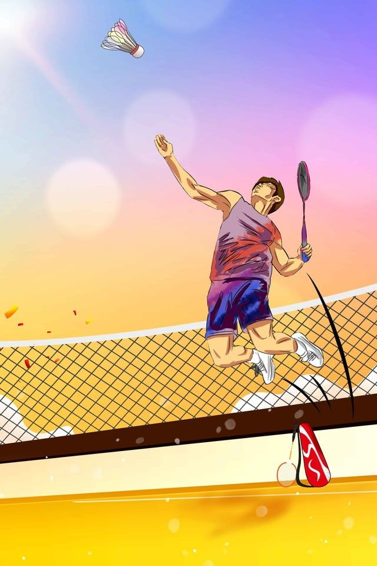

History of Badminton
Badminton evolved from a game called "Poona," played in India. British army officers introduced it to England in the 19th century. The modern version of badminton was standardized in 1873 in Badminton House, England—hence the name.
It became an Olympic sport in 1992 and is now a fast-paced, strategic game popular in many countries.
Rules & Gameplay
- Can be played in singles (1v1) or doubles (2v2)
- Players use racquets to hit a shuttlecock over a net
- First to 21 points wins a game (must lead by 2 points)
- Match is best of 3 games
- Only one hit per side is allowed
Major Badminton Tournaments
- All England Open Badminton Championships
- BWF World Championships
- Thomas Cup (Men’s Team)
- Uber Cup (Women’s Team)
- Olympic Games
Famous Badminton Players
- Lin Dan (China)
- Lee Chong Wei (Malaysia)
- PV Sindhu (India)
- Carolina Marín (Spain)
- Saina Nehwal (India)
Health Benefits of Playing Badminton
- Boosts cardiovascular health
- Improves reflexes and coordination
- Enhances muscle strength and flexibility
- Burns calories and aids in weight loss
- Improves mental focus and agility
Global Popularity
Badminton is especially popular in Asia and Europe. Countries like China, Indonesia, India, and Denmark produce top players. It's played recreationally and competitively worldwide, both indoors and outdoors.